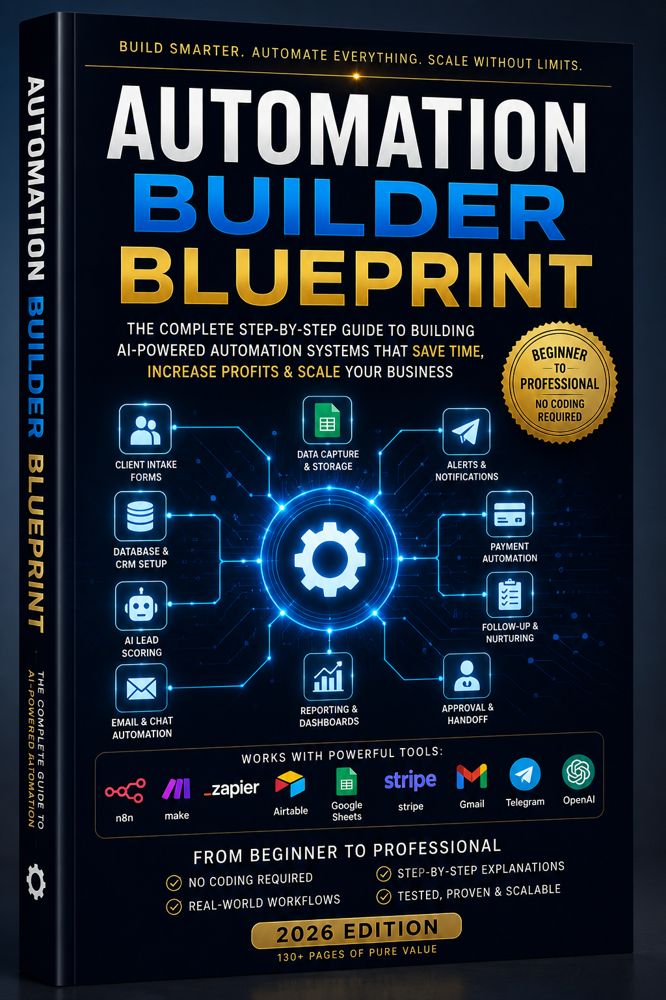

Clear Explanations
Understand what automation can do before choosing tools or building workflows.
Learn how to save time, follow up with leads faster, and organize repeated work with practical AI prompts and simple automation ideas. Start with the free 130-page Automation Builder Blueprint.
Free to download. Beginner friendly. Built for real everyday business problems.

| Lead | Source | Status | Next Step |
|---|---|---|---|
| Local Contractor | New | Send Review | |
| Creator | Warm | Workflow Call | |
| Service Owner | Group | Qualified | Quote Setup |
Business automation means using simple tools to handle repeated tasks consistently. It can help collect inquiries, organize customer details, send reminders, prepare replies, and keep follow-up from slipping through the cracks.
Start with one task that repeats often and has a clear result. Lead follow-up, client intake, quote requests, appointment reminders, and review requests are strong first choices for many small businesses.
Understand what automation can do before choosing tools or building workflows.
Use adaptable prompts for sales, content, customer service, admin, and planning.
See how forms, spreadsheets, email, and automation tools can work together.
Choose a sensible first project and avoid making your setup more complicated than it needs to be.
This free 130-page guide explains how useful automation works in plain language. It includes practical examples for lead capture, customer follow-up, admin, payments, approvals, AI-assisted work, and reliable handoffs.
Find a useful starting point
Choose the examples closest to your daily work. You do not need to automate everything at once.
Booking, quotes, reviews, CRM, invoices, and customer follow-up.
Content calendars, scripts, captions, newsletters, offers, and client delivery.
Daily reports, field evidence, job photos, safety checklists, and approvals.
Client intake, proposals, onboarding, project tracking, and reporting.
Product ideas, Gumroad listings, launch emails, upsells, and support replies.
Download the complete guide for free. Gumroad will ask for your email so the book can be delivered to you and you can keep access to the resource.
Get the Free BookNo technical experience required. Start with one useful workflow.
Need help turning the templates into a working system? YK SYSTEMS can map your current process and recommend the fastest automation to build first.
Find the repeated tasks, lost-lead points, and manual admin that cost time.
Build client intake, follow-up, CRM, content, and reporting systems.
Connect landing pages, forms, email, sheets, and AI-assisted workflows.
Explore the library
Use the blueprint first, then download the supporting resources that match your next step.
Common questions
Small business automation uses simple tools to handle repeated tasks such as lead capture, follow-up emails, quote requests, reminders, customer replies, and reporting. The goal is to save time and make sure important work does not get missed.
Start with one repeated task that costs time or loses opportunities. Good first choices include lead follow-up, client intake, quote requests, appointment reminders, invoice reminders, and review requests.
No. The Automation Builder Blueprint is written for beginners and explains practical ways to use AI prompts, forms, email, spreadsheets, and automation tools without requiring a technical background.
Yes. The full 130-page guide is free to download. It is designed to help you understand the possibilities and choose a sensible first automation project.
Yes. YK SYSTEMS can review your current process, identify the highest-impact opportunity, and build practical solutions for client intake, lead follow-up, websites, reporting, and AI-assisted workflows.